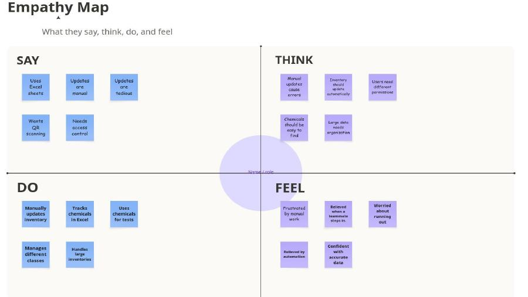
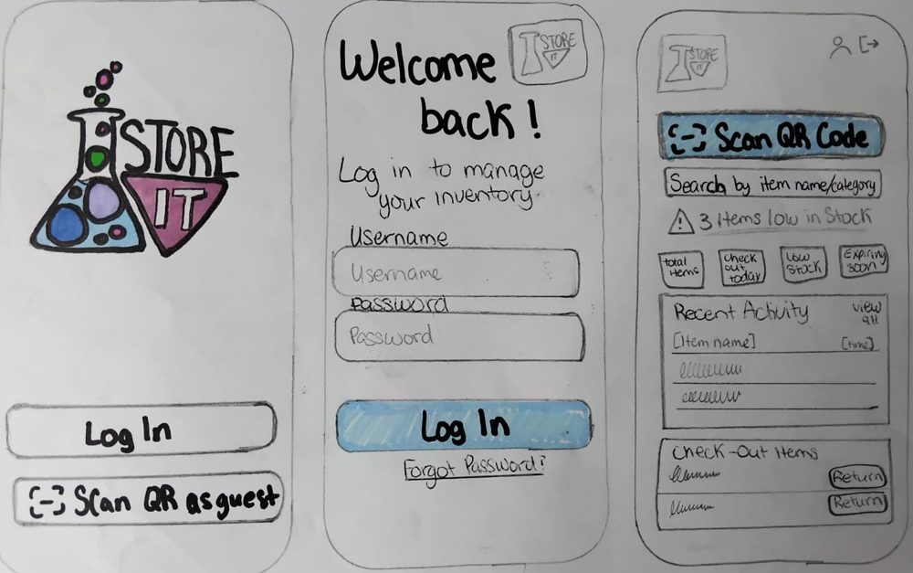
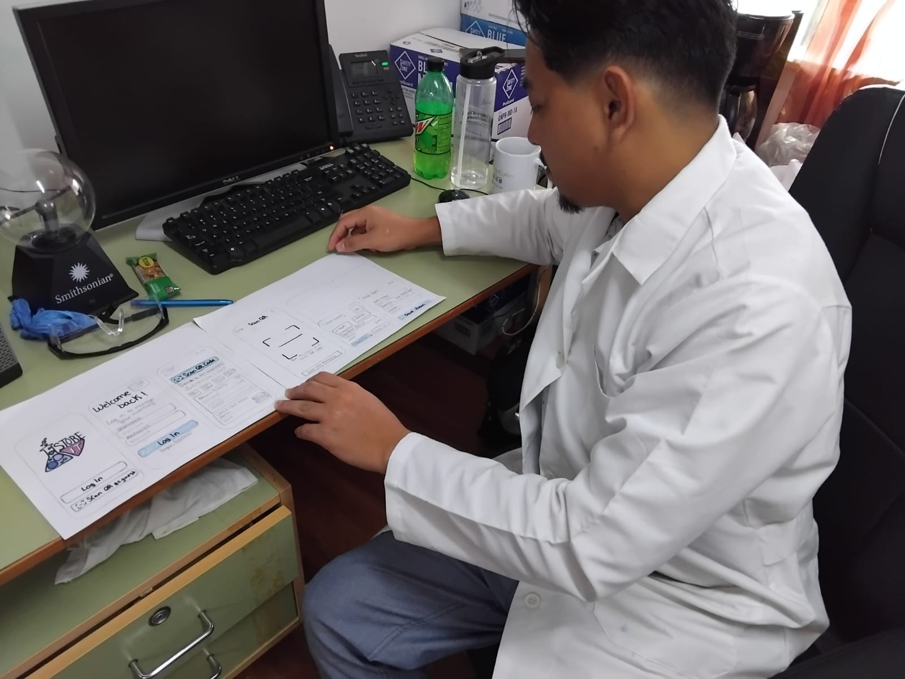
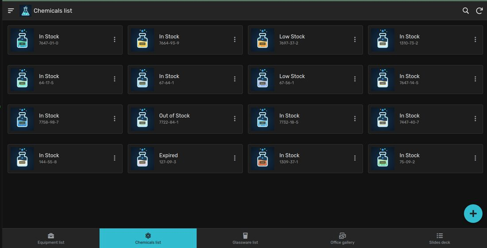
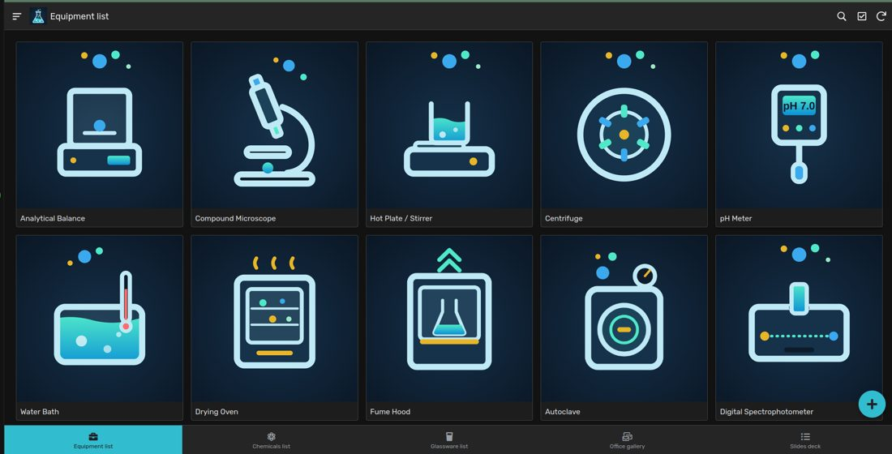
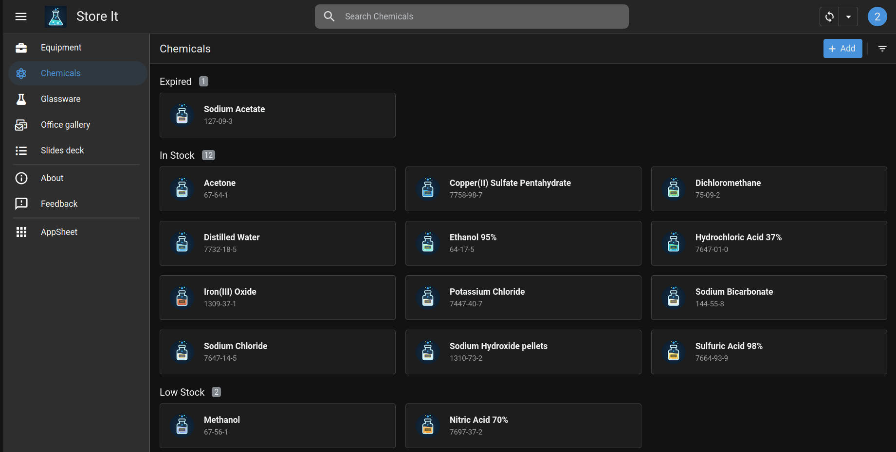
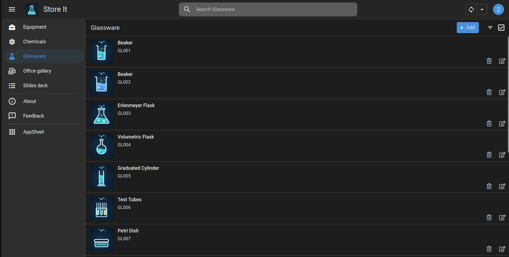
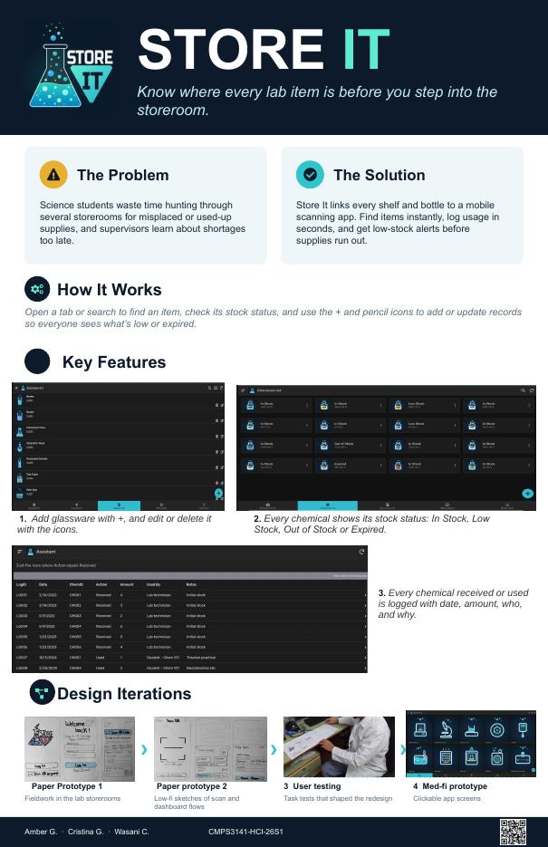

The team
We are three students in CMPS3141 - Human Computer Interfaces at the University of Belize. We shared the work, and each of us led different parts.
Amber Gill
Research and prototype lead
Led the original lab interviews, built the experience prototypes and the paper prototype, and built the AppSheet prototype.
Cristina Gonzales
Documentation lead
Wrote the project reports, the problem domain and point-of-view work, and created presentation slides.
Wasani Castillo
User testing and web lead
Ran the usability tests with lab staff, wrote the point-of-view statements, and built this website, the poster and the pitch slide.
Needfinding
We began by interviewing the people who run the science labs: a senior laboratory technician and a science laboratory assistant. We asked how they find, count and record lab supplies today, and what frustrates them.
- Inventory is kept by hand in Excel, which leads to inconsistent records.
- Staff suggested QR codes or barcodes to add items automatically, low-stock detection, and color-coded hazard symbols.
- The system must work on phones and tablets and handle a large inventory.
- Different kinds of users need different permissions.

Point of view and experience prototypes
The labs hold chemicals, glassware, equipment and microscope slides across four labs and a storeroom. One large master file is updated about once a year, so records drift away from what is really on the shelves. We turned our interviews into three points of view, then tested a cheap prototype for each.
1. Location and visibility
Finding an item should not mean checking several storerooms.
2. Manual counting
Counting 100+ containers by hand is slow and error-prone.
3. Real-time updates
Changes happen all year, so staff need quick updates.
Location sheet
A paper sheet matched to shelf labels pointed people to the right shelf at once, but it became cluttered.
Direct-log form
A paper form showed what to update, but writing in the middle of a task slowed people down.
Cardboard phone and QR scan
Scanning a bottle took under two seconds and felt natural. Awkward shelf angles and curved bottles were a problem.
Scanning removed the handwriting friction, so we took a scanner-first idea forward.
Concept video
A short video tells the story: a student hunts through storeroom cabinets and paper binders, until a teammate finds the same item in seconds with Store IT.
Low-fidelity prototype and test
We sketched many ideas and chose a scanner-first design: one main screen with a large Scan button, search and low-stock alerts, with item details and the Add Item form opening on top. We tested a paper version with four lab staff and student assistants on three tasks: find an item, record a removal, and add a new chemical.
- Each container needs its own QR code, because bottles of the same chemical come in different sizes.
- Reusable glassware stays in drawers, while chemicals need to be tracked as they are used.
- New chemicals need a received date, hazard rating and safety data sheet link.
- Staff asked for generic role-based accounts, and for the Hummingbird Analytical Lab to keep a separate inventory.


Medium-fidelity prototype
We built the clickable prototype in AppSheet. It has tabs for Equipment, Chemicals, Glassware, Office supplies and microscope slides, search and voice search, a stock status on every chemical (In Stock, Low Stock, Out of Stock or Expired), add and edit forms, and a stock log of what was received or used.


Not built yet: QR scanning, role-based logins and separate labs, and automatic notifications. All data in the prototype is sample data.
How to use it: open the prototype, sign in with Google if asked, then pick a tab, search for an item, and open it. The README explains each of the three tasks step by step.
High-fidelity prototype
This is the final version of the Store IT prototype, built in AppSheet. Users can browse equipment, chemicals and glassware by tab, find items with search or voice search, see each chemical's stock status, add and edit records, and review a stock log of what was received or used.


How to use it
- Find an item: open a tab, tap the search icon, type part of the name, and open the item.
- Update a record: open the item, tap Edit, change the details, and tap Save.
- Restock: look for Low Stock or Out of Stock chemicals, then tap + to add the restocked item.
Not built yet: QR scanning, role-based logins, and automatic notifications. All data is sample data. If AppSheet asks you to sign in, use your Google account.
Poster and pitch slide
We made a poster and a one-slide, 30-second pitch for the FST STEM Fair on 11 November 2026. The poster tells the story from needfinding to prototype in screenshots and short captions.
